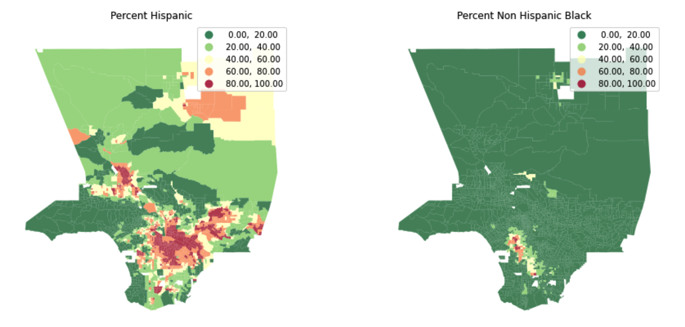

Getting Started with GIS and Spatial Research
Contents
Getting Started with GIS and Spatial Research#

In this hands on workshop, you will be provided with a Jupyter Notebook workspace to import census data, explore, clean, and prepare the data for analysis using python. You will also learn how to create compelling choropleth maps with selected variables that can be used for publications.
UCLA affiliated participants#
Launch this workshop on our JupyterHub (choose UCLA)
Non-UCLA participants#